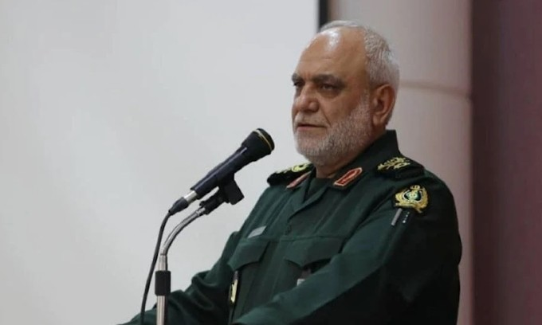

Mỹ – Iran đạt thỏa thuận về ngừng bắn, mở cửa eo biển Hormuz trong hai tuần
Mỹ và Iran đồng ý ngừng bắn trong hai tuần, Tehran sẽ cho phép tàu thuyền đi qua eo biển Hormuz trong thời gian này "với sự điều phối từ lực lượng vũ trăng".
Vệ binh Cách mạng Hồi giáo Iran thông báo ông Majid Khademi, lãnh đạo cơ quan tình báo của lực lượng, thiệt mạng trong cuộc không kích. Hãng thông tấn Iran Tasnim hôm nay dẫn tuyên bố của Vệ binh Cách mạng Hồi giáo (IRGC) cho biết ông Majid Khademi, lãnh đạo cơ quan tình báo của lực lượng, thiệt mạng trong vụ tấn công do "Mỹ và Israel thực hiện" vào rạng sáng. IRGC không nêu rõ địa điểm ông Khademi bị hạ sát, nhưng sáng sớm nay nhiều cuộc không kích đã nhắm vào các khu dân cư xung quanh thủ đô Tehran.

Trước đó, Bộ trưởng Quốc phòng Israel, ông Israel Katz, hôm 5/4 đã đe dọa sẽ "truy đuổi và hạ sát" các lãnh đạo Iran. "Chừng nào còn diễn ra các cuộc tấn công tên lửa nhắm vào dân thường Israel, Iran sẽ phải trả giá đắt, bị làm cho suy yếu và cuối cùng là bị tê liệt cơ sở hạ tầng quốc gia cũng như năng lực hoạt động", ông Katz nói.
Những ngày gần đây, quân đội Israel cùng phía Mỹ đã tấn công các cơ sở sản xuất thép và hóa dầu của Iran, với cáo buộc rằng doanh thu từ những lĩnh vực này được Vệ binh Cách mạng Hồi giáo Iran (IRGC) sử dụng để tài trợ cho việc sản xuất vũ khí.
Bộ tư lệnh Trung tâm Khatam al-Anbiya, "đầu não tối cao" của các lực lượng vũ trang Iran, ngày 5/4 cũng cảnh báo sẽ có những biện pháp trả đũa "tàn khốc hơn nhiều" nếu đối phương tấn công các mục tiêu dân sự. "Nếu các cuộc tấn công vào mục tiêu dân sự lặp lại, giai đoạn tiếp theo của những hoạt động tấn công và trả đũa của chúng tôi sẽ tàn khốc, lan rộng hơn nhiều", phát ngôn viên của Bộ tư lệnh Trung tâm Khatam al-Anbiya tuyên bố.
Tổng thống Mỹ Donald Trump trước đó đe dọa phá hủy cơ sở hạ tầng dân sự của Iran, yêu cầu Tehran mở cửa lại eo biển Hormuz trước 20h giờ miền đông ngày 7/4 (7h ngày 8/4 giờ Hà Nội). Từ khi bắt đầu cuộc xung đột, bằng mạng lưới tình báo tinh vi, Israel đã lần theo dấu vết và liên tiếp hạ sát các quan chức cấp cao Iran, giáng đòn vào hệ thống an ninh nước này. Tuy nhiên, Ngoại trưởng Iran Abbas Araghchi tuyên bố nước này có cấu trúc chính trị vững chắc, nên việc Israel hạ sát các quan chức cấp cao không thể "giáng đòn chí mạng".

Mỹ và Iran đồng ý ngừng bắn trong hai tuần, Tehran sẽ cho phép tàu thuyền đi qua eo biển Hormuz trong thời gian này "với sự điều phối từ lực lượng vũ trăng".

Người dân Iran tập trung trên đường phố Tehran, vậy có và hô khẩu hiệu sau khi lệnh ngừng bắn hai tuần với Mỹ được công bố.

Nằm ở bộ nam eo biển Hormuz, cách Iran gần 34 km, bán đảo Musandam của Oman đang chứng kiến những hệ lụy về kinh tế và đời sống khi xung đột bùng phát.